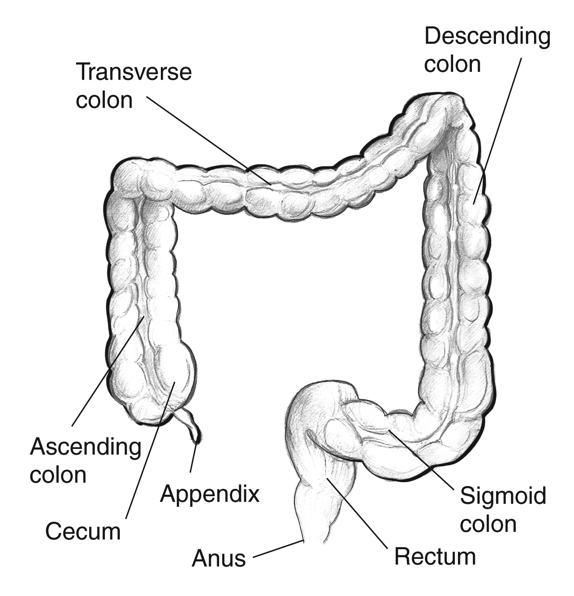

The large intestine 🧱 is the final part of the digestive
system 🍽️. Its main role is to absorb water 💧 and
electrolytes from the remaining indigestible food,
turning it into solid waste (feces) 🗑️.
It also houses helpful bacteria 🦠 that aid in breaking
down some substances and producing certain vitamins like
vitamin K 🌿.
The large intestine includes sections such
as the cecum, colon, rectum, and anus, which work
together to store and eventually expel waste from the
body 🚽. It plays a crucial role in maintaining fluid
balance ⚖️ and supporting overall digestive health 🌱.
